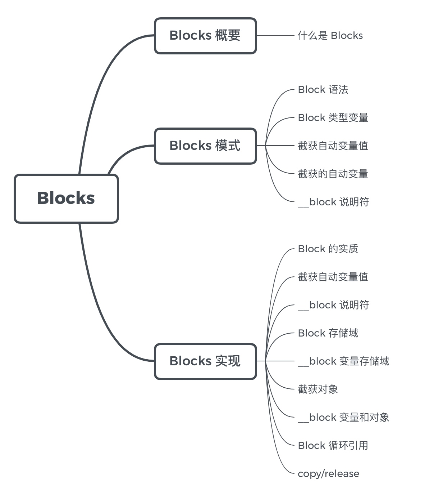
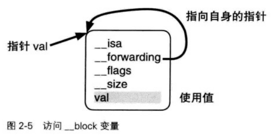

Blocks 知识点

前言
- block的原理是怎样的？本质是什么？
- __block的作用是什么？有什么使用注意点？
- block的属性修饰词为什么是copy？使用block有哪些使用注意？
- block在修改NSMutableArray，需不需要添加__block？
1. Blocks 概要
1.1 什么是 Blocks
Blocks 是 C 语言的扩充功能，即：带有自动变量（局部变量）的匿名函数。
- “带有自动变量”：为保证 Blocks 能正常访问外部的变量，Blocks 有一个自动捕获变量的机制。Blocks 能自动捕获（保存）在其内部使用到的外部自动变量（局部变量）的瞬间值。
- 匿名函数:不带有名称的函数。
其他语言中 Block 的名称
| 程序语言 |
Block 的名称 |
| C + Blocks |
Block |
| Smalltalk |
Block |
| Ruby |
Block |
| LISP |
Block |
| Python |
Lambda |
| C++ 11 |
Lambda |
| JavaScript |
Anonymous fucntion |
2. Block 模式
2.1 Block 语法
完整形式的 Block 语法与一般的 C 语言函数定义相比，仅有两点不同：
- 没有函数名: 因为 Block 是匿名函数。
- 带有“\^” （插入记号，caret）记号: 因为 OS X、iOS 应用程序的源代码中将大量使用 Block，所以插入该记好便于查找。
Block 声明语法:
^ 返回值类型 参数列表 表达式
e.g:
^int (int count) { return count + 1; };
Block 语法的简化：
1. 省略返回值类型（表达式含有 return 语句时，其返回值类型必定与 return 返回值的类型一致）
^ 参数列表 表达式
e.g:
^(int count) { return count + 1; };
2. 省略返回值类型和参数列表
^表达式
e.g:
^{ return count + 1 };
2.2 Block 类型变量
Block 语法但从记述方式来看，除了没有名称和带有“\^”以外，其他的都与 C 语言函数定义相同。在定义 C 语言函数时，可以将定义函数的地址赋值给函数指针变量中。
int func(int count)
{
return count + 1;
}
int (*funcptr)(int) = &func;
在 Block 的语法下，可将 Block 语法赋值给声明为 Block 类型的变量中。即源代码中一旦使用 Block 语法就相当于生成了可赋值给 Block 类型变量的“值”。在 Blocks 中，“Block” 既指源代码中的 Block 语法，也指由 Block 语法所生成的值。
声明 Block 类型变量：
与前面对比使用函数指针的源代码对比，声明 Block 类型变量仅仅是将声明函数指针类型变量的 “*” 变成了 “\^”。该 Block 类型变量的与一般的 C 语言变量完成相同，可做为以下用途使用:
- 自动变量
- 函数参数
- 静态变量
- 静态全局变量
- 全局变量
使用 Block 语法将 Block 赋值为 Block 类型变量:
int (^blk)(int) = ^(int count) { return count + 1; };
- 由 Block 类型变量向 Block 类型变量赋值：
int (^blk1)(int) = blk;
int (^blk2)(int);
blk2 = blk1;
void func(int (^blk)(int) {}
int (^func())(int)
{
return ^(int count){return count + 1;};
}
typedef int (^blk_t)(int);
/* 原来的记述方式
void func(int (^blk)(int))
*/
简化为：
void func(blk_t blk) {}
/* 原来的记述方式
int (^func()(int))
*/
简化为：
blk_t func()
将赋值给 Block 类型变量中的 Block 方法的调用与使用函数指针类型变量调用函数的方法几乎完全相同：
int result = (*funcptr)(10);
Block 类型变量调用 Block 与 C 语言通常的函数调用没有区别。在函数参数重使用 Block 类型变量并在函数中执行 Block 的例子:
int func(blk_t blk, int rate)
{
return blk(rete);
}
在 Objective-C 中方法使用:
- (int)methodUsingBlock:(blk_t)blk rete:(int)rete
{
return blk(rete);
}
Block 类型变量可完全像通常的 C 语言变量一样使用，因此也可以使用之乡 Block 类型变量的指针，即 Block 的指针类型变量:
typedef int (^blk_t)(int);
blk_t blk = ^(int count){return count + 1; };
blk_t *blkprt = &blk;
(*blkptr)(10);
2.3 截获自动变量值
“带有自动变量值”在 Blocks 中表现为“截获自动变量值”。截获自动变量值的实例如下:
int main()
{
int dmy = 256;
int val = 10;
const char *fmt = "val = %d\n";
void (^blk)(void) = ^{printf(fmt, val);};
val = 2;
fmt = "Thes values were changed. val = %d\n";
bll();
return 0
}
// val = 10
在该代码中， Block 语法的表达式使用的是它之前声明的自动变量 fmt 和 val。Blocks 中，Block 表达式截获所使用的自动变量值，即保存该自动变量的瞬间值。在执行 Block 语法后，即使改写 Block 中使用的自动变量的值也不会影响 Block 执行时变量的值。该 Block 语法执行时，字符串指针 “val=%d\n”被赋值到自动变量 fmt 中，int 值 10 被赋值到自动变量 val 中，因此这些值被保存（即被截获），从而在执行块时使用。这就是自动变量值的捕获。
2.4 __block 说明符
若想在 Block 语法的表达式中将赋给 Block 语法外声明的自动变量，需要在该自动变量上附加 __block 说明符。
__block int val = 0;
void (^blk)(void) = ^{ val = 1; };
blk();
printf("val = %d\n", val);
// val = 1
使用附有 __block 说明符的自动变量可在 Block 中赋值，该变量称为 __block 变量。
3 Blocks 的实现
3.1 Block 的实质
通过 clang（LLVM 编译器）将 Objective-C 源代码转换为 C++ 的源代码：
clang -rewrite-objc 源代码文件名
int main(int argc, const char *argv[])
{
void (^ blk)(void) = ^{ printf("Block\n"); };
blk();
return 0;
}
通过 clang 将上述代码转换成 C++ 代码得：
struct __block_impl {
void *isa;
int Flags;
int Reserved;
void *FuncPtr;
};
struct __main_block_impl_0 {
struct __block_impl impl;
struct __main_block_desc_0* Desc;
__main_block_impl_0(void *fp, struct __main_block_desc_0 *desc, int flags=0) {
impl.isa = &_NSConcreteStackBlock;
impl.Flags = flags;
impl.FuncPtr = fp;
Desc = desc;
}
};
static void __main_block_func_0(struct __main_block_impl_0 *__cself)
{
printf("Block\n");
}
static struct __main_block_desc_0 {
size_t reserved;
size_t Block_size;
} __main_block_desc_0_DATA = {
0,
sizeof(struct __main_block_impl_0)
};
int main(int argc, const char *argv[])
{
void (* blk)(void) = ((void (*)())&__main_block_impl_0((void *)__main_block_func_0, &__main_block_desc_0_DATA));
((void (*)(__block_impl *))((__block_impl *)blk)->FuncPtr)((__block_impl *)blk);
return 0;
}
对比最初的源代码中的 Block 语法：
转换为：
static void __main_block_func_0(struct __main_block_impl_0 *__cself)
{
printf("Block\n");
}
如转换的源代码所示，通过 Blocks 使用的匿名函数实际上被作为简单的 C 语言函数来处理。另外，根据 Block 语法所属的函数名（此处为main）和该 Block 语法在该函数出现的顺序值（此处为0）来经 clang 变换的函数命名。
__cself 相当于 C++ 实例方法中指向实例自身的变量 this，或是 Objective-C 实例方法中指向对象自身的变量 self, 即参数 __cself 为指向 Block 值的变量。__cself 声明如下：
struct __main_block_impl_0 *__cself
与 C++ 的 this 和 Objective-C 的 self 相同， 参数 __cself 是 __main_block_impl_0 结构题的指针。该结构体声明如下：
struct __main_block_impl_0 {
struct __block_impl impl; // 今后版本升级所需的区域以及函数指针
struct __main_block_desc_0* Desc; // 其结构为今后版本升级所需要区域和 Block 的大小
};
__block_impl 结构体的声明：
struct __block_impl {
void *isa;
int Flags;
int Reserved;
void *FuncPtr;
};
__main_block_desc_0 结构体声明：
static struct __main_block_desc_0 {
size_t reserved;
size_t Block_size;
}
再看 __main_block_impl_0 结构的构造函数：
__main_block_impl_0(void *fp, struct __main_block_desc_0 *desc, int flags=0) {
impl.isa = &_NSConcreteStackBlock;
impl.Flags = flags;
impl.FuncPtr = fp;
Desc = desc;
}
该构造函数的调用：
void (* blk)(void) =
((void (*)())&__main_block_impl_0(
(void *)__main_block_func_0, &__main_block_desc_0_DATA));
去掉强制转化部分，可得：
struct __mian_block_impl_0 tmp = __main_block_impl_0(
__main_block_func_0, &__main_block_desc_0_DATA);
struct __main_block_impl_0 *blk = &tmp;
该代码将 __main_block_impl_0 结构体类型的自动变量，即栈上生成的 __main_block_impl_0 结构体实例的指针，赋值给 __main_block_impl_0 结构体指针类型的变量 blk。这部分最初的源代码为：
void (^ blk)(void) = ^{ printf("Block\n"); };
将 Block 语法生成的 Block 赋值给 Block 类型的变量 blk。等同于将 __main_block_impl_0 结构体实例的指针赋值给 blk。该源代码中的 Block 就是 __main_block_impl_0 结构体类型的自动变量，即栈上生成的 __main_block_impl_0 结构体实例。
由 __main_block_impl_0 结构体源代码可得，该结构体的构造函数的构造参数为：
__main_block_impl_0(__main_block_func_0, &__main_block_desc_0_DATA);
第一个参数是由 Block 语法转换的 C 语言函数指针。第二个参数是作为静态全局变量初始化的 __main_block_desc_0 结构体实例指针。以下是 __main_block_desc_0 结构体实例的初始化部分代码：
static struct __main_block_desc_0 __main_block_desc_0_DATA = {
0,
sizeof(struct __main_block_impl_0)
}
由此可知，该源代码使用 Block， 即 __main_block_impl_0 结构体的实例的大小，进行初始化。
栈上 __main_block_impl_0 结构体实例（即 Block）参数的初始化过程：
// 展开 __main_block_impl_0 结构体的 __block_impl 结构体
struct __main_block_impl_0 {
void *isa;
int Flags;
int Reserved;
void *FuncPtr;
struct __main_block_desc_0* Desc;
};
该构造体根据构造函数会像下面这样进行初始化：
isa = &_NSConcreteStackBlock;
Flags = 0;
Reserved = 0;
FuncPtr = __main_block_func_0;
Desc = &__main_block_desc_0_DATA;
再看 Block 调用部分源代码：
这部分可转换为以下源代码：
((void (*)(__block_impl *))((__block_impl *)blk)->FuncPtr)((__block_impl *)blk);
去掉转换部分：
(*blk->impl.FuncPtr)(blk);
这就是简单地使用函数指针调用函数。由 Block 语法转换的 __main_block_func_0 函数的指针被赋值给成员变量 FuncPtr 中。另外说明了，__main_block_func_0 函数的参数 __cself 指向 Block 值。在调用该函数的源代码中可以看出 Block 正式作为参数进行了传递。
至此总算是摸清了 Block 的实质，不过之前跳过没有说明的 _NSConcreteStackBlock 到底是什么。
isa = &_NSConcreteStackBlock;
将 Block 指针赋给 Block 的结构体成员变量 isa。为了理解它，首先要理解 Objective-C 类和对象的实质。其实，所谓 Block 就是 Objective-C 对象。
3.2 截获自动变量值
int main(int argc, const char * argv[]) {
@autoreleasepool {
int dmy = 256;
int val = 10;
const char *fmt = "val = %d\n";
void (^blk)(void) = ^{printf(fmt, val);};
blk();
}
return 0;
}
通过 clang 转换可得：
struct __main_block_impl_0 {
struct __block_impl impl;
struct __main_block_desc_0* Desc;
const char *fmt;
int val;
__main_block_impl_0(void *fp, struct __main_block_desc_0 *desc, const char *_fmt, int _val, int flags=0) : fmt(_fmt), val(_val) {
impl.isa = &_NSConcreteStackBlock;
impl.Flags = flags;
impl.FuncPtr = fp;
Desc = desc;
}
};
static void __main_block_func_0(struct __main_block_impl_0 *__cself) {
const char *fmt = __cself->fmt; // bound by copy
int val = __cself->val; // bound by copy
printf(fmt, val);}
static struct __main_block_desc_0 {
size_t reserved;
size_t Block_size;
} __main_block_desc_0_DATA = { 0, sizeof(struct __main_block_impl_0)};
int main(int argc, const char * argv[]) {
/* @autoreleasepool */ { __AtAutoreleasePool __autoreleasepool;
int dmy = 256;
int val = 10;
const char *fmt = "val = %d\n";
void (*blk)(void) = ((void (*)())&__main_block_impl_0((void *)__main_block_func_0, &__main_block_desc_0_DATA, fmt, val));
((void (*)(__block_impl *))((__block_impl *)blk)->FuncPtr)((__block_impl *)blk);
}
return 0;
}
Block 语法表达式中使用的自动变量被作为成员变量追加到了 __main_block_impl_0结构体中。
struct __main_block_impl_0 {
struct __block_impl impl;
struct __main_block_desc_0* Desc;
const char *fmt;
int val;
};
__main_block_impl_0 结构体内声明的成员变量类型与自动变量类型完全相同（只有在 Block 语法表达式中使用的自动变量才会被追加）。Block 的自动变量捕获只针对 Block 使用的自动变量。
__main_block_impl_0(void *fp, struct __main_block_desc_0 *desc, const char *_fmt, int _val, int flags=0) : fmt(_fmt), val(_val) { }
在初始化结构体时，根据传递给构造函数的参数对自动变量追加的成员变量进行初始化。以下通过构造函数调用确认其参数：
void (*blk)(void) =
((void (*)())&__main_block_impl_0((void *)__main_block_func_0, &__main_block_desc_0_DATA, fmt, val));
使用执行 Block 语法时的自动变量 fmt 和 val 来初始化 __main_block_impl_0 结构体实例。即在该源代码中，__main_block_impl_0 结构体实例的初始化如下：
impl.isa = &_NSConcreteStackBlock;
impl.Flags = 0;
impl.FuncPtr = __main_block_func_0;
Desc = &__main_block_desc_0_DATA;
fmt = "val = %d\n";
val = 10;
由此可知，在 __main_block_impl_0 结构体实例（即Block） 中，自动变量值被捕获。
下面再看一下使用 Block 的匿名函数的实现。最初源代码的 Block 语法如下所示：
该源代码可转换以下函数：
static void __main_block_func_0(struct __main_block_impl_0 *__cself) {
const char *fmt = __cself->fmt; // bound by copy
int val = __cself->val; // bound by copy
printf(fmt, val);
}
在转换后的源代码中，截获到 __main_block_impl_0 结构体实例的成员变量上的自动变量，这些变量在 Block 语法表达式之前被声明定义。因此，原来的源代码表达式无需改动便可使用截获的自动变量值执行。
总的来说，所谓“截获自动变量值”意味着在执行 Block 语法时，Block 语法表达式所使用的自动变量值被保存到 Block 的结构体实例（即Block自身）中。需要注意的是，Block 不能直接使用 C 语言数组类型的自动变量。
3.3 __block 说明符
Block 中所使用的被截获自动变量就如“带有自动变量值的匿名函数”所说，仅截获自动变量的值。Block 中使用自动变量后，在 Block 的结构体实例中重写该自动变量也不会改变原先截获的自动变量。
在 C 语言中有个一个变量允许 Block 改写值：
int global_val = 1;
static int static_global_val = 2;
int main(int argc, const char * argv[]) {
@autoreleasepool {
static int static_val = 3;
void (^blk)(void) = ^{
global_val *= 1;
static_global_val *= 2;
static_val *= 3;
};
blk();
printf("global_val=%d\n", global_val);
printf("static_global_val=%d\n", static_global_val);
printf("static_val=%d\n", static_val);
}
return 0;
}
该源代码转换后如下：
int global_val = 1;
static int static_global_val = 2;
struct __main_block_impl_0 {
struct __block_impl impl;
struct __main_block_desc_0* Desc;
int *static_val;
__main_block_impl_0(void *fp, struct __main_block_desc_0 *desc, int *_static_val, int flags=0) : static_val(_static_val) {
impl.isa = &_NSConcreteStackBlock;
impl.Flags = flags;
impl.FuncPtr = fp;
Desc = desc;
}
};
static void __main_block_func_0(struct __main_block_impl_0 *__cself) {
int *static_val = __cself->static_val; // bound by copy
global_val *= 1;
static_global_val *= 2;
(*static_val) *= 3;
}
static struct __main_block_desc_0 {
size_t reserved;
size_t Block_size;
} __main_block_desc_0_DATA = { 0, sizeof(struct __main_block_impl_0)};
int main(int argc, const char * argv[]) {
/* @autoreleasepool */ { __AtAutoreleasePool __autoreleasepool;
static int static_val = 3;
void (*blk)(void) = ((void (*)())&__main_block_impl_0((void *)__main_block_func_0, &__main_block_desc_0_DATA, &static_val));
((void (*)(__block_impl *))((__block_impl *)blk)->FuncPtr)((__block_impl *)blk);
printf("global_val=%d\n", global_val);
printf("static_global_val=%d\n", static_global_val);
printf("static_val=%d\n", static_val);
}
return 0;
}
由此可见访问静态全局变量 static_global_val 和全局变量 global_val 与转换前完全相同。
static void __main_block_func_0(struct __main_block_impl_0 *__cself) {
int *static_val = __cself->static_val; // bound by copy
...
(*static_val) *= 3;
}
对于静态变量 static_val, 使用静态变量 static_val的指针对其进行访问。将静态变量 static_val 的指针传递给 __main_block_impl_0结构体的构造函数并保存。
静态变量的这种方法似乎也适用于自动变量的访问。但为什么没有这么做呢？
实际上，在由 Block 语法生成的值 Block 上，可以存有超过其变量作用域的被截获对象的自动变量。变量作用域结束的同时，原来的自动变量被废弃，因此 Block 中超过变量作用于而存在的变量同静态变量一样，将不能通过指针访问原来的自动变量。
解决 Block 中不能保存值这一问题的第二种方法是使用 __block 说明符。在 C 语言中有以下存储域类说明符：
- typedef
- extern
- static
- auto
- register
__block 说明符类似于 static 、auto 和 register 说明符，它们用于指定将变量值设置到哪个存储域中。例如，auto 表示作为自动变量存储在栈中，static 表示作为静态变量存储在数据区中。
__block 使用如下：
int main(int argc, const char * argv[]) {
@autoreleasepool {
__block int val = 10;
void (^blk)(void) = ^{val = 1;};
blk();
printf("val=%d", val);
}
return 0;
}
转换后如下：
struct __Block_byref_val_0 {
void *__isa;
__Block_byref_val_0 *__forwarding;
int __flags;
int __size;
int val;
};
struct __main_block_impl_0 {
struct __block_impl impl;
struct __main_block_desc_0* Desc;
__Block_byref_val_0 *val; // by ref
__main_block_impl_0(void *fp, struct __main_block_desc_0 *desc, __Block_byref_val_0 *_val, int flags=0) : val(_val->__forwarding) {
impl.isa = &_NSConcreteStackBlock;
impl.Flags = flags;
impl.FuncPtr = fp;
Desc = desc;
}
};
static void __main_block_func_0(struct __main_block_impl_0 *__cself) {
__Block_byref_val_0 *val = __cself->val; // bound by ref
(val->__forwarding->val) = 1;}
static void __main_block_copy_0(struct __main_block_impl_0*dst, struct __main_block_impl_0*src) {_Block_object_assign((void*)&dst->val, (void*)src->val, 8/*BLOCK_FIELD_IS_BYREF*/);}
static void __main_block_dispose_0(struct __main_block_impl_0*src) {_Block_object_dispose((void*)src->val, 8/*BLOCK_FIELD_IS_BYREF*/);}
static struct __main_block_desc_0 {
size_t reserved;
size_t Block_size;
void (*copy)(struct __main_block_impl_0*, struct __main_block_impl_0*);
void (*dispose)(struct __main_block_impl_0*);
} __main_block_desc_0_DATA = { 0, sizeof(struct __main_block_impl_0), __main_block_copy_0, __main_block_dispose_0};
int main(int argc, const char * argv[]) {
/* @autoreleasepool */ { __AtAutoreleasePool __autoreleasepool;
//__attribute__((__blocks__(byref))) __Block_byref_val_0 val = {(void*)0,(__Block_byref_val_0 *)&val, 0, sizeof(__Block_byref_val_0), 10};
__Block_byref_val_0 val = {
0,
&val,
0,
sizeof(__Block_byref_val_0),
10
};
void (*blk)(void) = ((void (*)())&__main_block_impl_0((void *)__main_block_func_0, &__main_block_desc_0_DATA, (__Block_byref_val_0 *)&val, 570425344));
((void (*)(__block_impl *))((__block_impl *)blk)->FuncPtr)((__block_impl *)blk);
printf("val=%d", (val.__forwarding->val));
}
return 0;
}
由以上源码可得变量 val 上附加了 __block 说明符之后：
__block int val = 10;
// 经过转换
struct __Block_byref_val_0 val = {
0,
&val,
0,
sizeof(__Block_byref_val_0),
10
};
__block 变量变为了结构体实例。__block 变量也同 Block 一样变成 __Block_byref_val_0 结构体类型的自动变量，即栈上生成的 __Block_byref_val_0 结构体实例。该变量初始化为10，且这个值也出现在结构体实例的初始化中，这意味着该结构体持有相当于原自动变量的成员变量。该结构体声明如下：
struct __Block_byref_val_0 {
void *__isa;
__Block_byref_val_0 *__forwarding;
int __flags;
int __size;
int val;
};
如同初始化时的源代码，该结构体中最后的成员变量 val 是相当于原自动变量的成员变量，从它的名称也能看出这一点。
再来看给 __block 变量赋值的代码：
转换如下：
static void __main_block_func_0(struct __main_block_impl_0 *__cself) {
__Block_byref_val_0 *val = __cself->val; // bound by ref
(val->__forwarding->val) = 1;
}
刚刚在 Block 中向静态变量赋值时，使用了指向该静态变量的指针。而向 __block 变量赋值过程中，Block 的__main_block_impl_0 结构体实例持有指向 __block 变量 val 的 __Block_byref_val_0 结构体实例的指针。
__Block_byref_val_0 结构体实例的成员变量 __forwarding 持有指向该实例自身的指针。通过成员变量 __forwarding 访问成员变量 val（成员变量 val 时该实例自身持有的变量，它相当于原自动变量）。

另外, __block 变量的 __Block_byref_val_0 结构体并不在 Block 中的 __main_block_impl_0 结构体中，这样做是为了在多个 Block 中使用 __Block变量。
__block int val = 10;
void (^blk0)(void) = ^{val = 0;};
void (^blk1)(void) = ^{val = 1;};
Block 类型变量 blk0 和 blk1 访问 __block 变量 val。这部分代码转换后如下：
__Block_byref_val_0 val = {0, &val, 0, sizeof(__Block_byref_val_0), 10};
blk0 = &__main_block_impl_0(
__main_block_func_0, &__main_block_desc_0_DATA, (__Block_byref_val_0 *)&val, 570425344));
blk1 = &__main_block_impl_1(
__main_block_func_1, &__main_block_desc_1_DATA, (__Block_byref_val_0 *)&val, 570425344));
两个 Block 都是用了 __Block_byref_val_0 结构体实例 val 的指针。这样一来就可以从多个 Block 中使用同一个 __block 变量。当然，反过来从一个 Block 中使用多个 __block 变量也是可以的。只要增加 Block 的结构体成员变量与构造函数的参数，便可对应使用多个 __block 变量。

问题
- 什么是 Widget ?
- 如何理解 Widget 、Element 和 RenderObject 这三个概念？它们之间是一一对应的吗？能否在 Android/iOS/Web 中找到对应的概念呢？
在 iOS 中 UIView 相当于 Element, CALayer 相当于 RenderObject. UIKit 没有 Widget 这个概念。
概念
Flutter 的核心设计思想是”一切 Widget”。
Widget 是 Flutter 功能的抽象描述，是视图的配置信息，同样也是数据的映射，是 Flutter 开发框架中最基本的概念。如 View, View Controller, Activity, Application, Layout等，在 Flutter 中都是 Widget。
Flutter 将视图树的概念进行了扩展，把视图数据的组织和渲染抽象为三部分，即 Widget，Element 和 RenderObject。这三部分之间的关系，如下所示：

Widget 是 Flutter 世界里对视图的一种结构化描述，可看作前端中的“控件”或“组件”。Widget 是控件实现的基本逻辑单位，里面存储的是有关视图渲染的配置信息，包括布局、渲染属性、事件响应信息等。
在页面渲染上，Flutter 将“Simple is best”这一理念做到了极致。Flutter 将 Widget 设计成不可变的，所以当视图渲染的配置信息发生变化时，Flutter 会选择重建 Widget 树的方式进行数据更新，以数据驱动 UI 构建的方式简单高效。但这样做的缺点是，因为涉及到大量对象的销毁和重建，所以会对垃圾回收造成压力。不过，Widget 本身并不涉及实际渲染位图，所以它只是一份轻量级的数据结构，重建的成本很低。
另外，由于 Widget 的不可变性，可以以较低成本进行渲染节点复用，因此在一个真实的渲染树中可能存在不同的 Widget 对应同一个渲染节点的情况，这无疑又降低了重建 UI 的成本。
Element
Element 是 Widget 的一个实例化对象，它承载了视图构建的上下文数据，是连接结构化的配置信息到完成最终渲染的桥梁。
Flutter 渲染过程，可以分为这么三步：
- 首先，通过 Widget 树生成对应的 Element 树；
- 然后，创建相应的 RenderObject 并关联到 Element.renderObject 属性上；
- 最后，构建成 RenderObject 树，以完成最终的渲染。
可以看到，Element 同时持有 Widget 和 RenderObject。而无论是 Widget 还是 Element，其实都不负责最后的渲染，只负责发号施令，真正去干活儿的只有 RenderObject。那么，为什么不直接 Widget 命令 RenderObject 去干活呢？因为这样会极大增加渲染带来的性能损耗。因为 Widget 具有不可变性，但 Element 却是可变的。实际上，Element 树这一层将 Widget 树的变化（类似 React 虚拟 DOM diff）做了抽象，可以只将真正需要修改的部分同步到真实的 RenderObject 树中，最大程度降低对真实渲染视图的修改，提高渲染效率，而不是销毁整个渲染视图树重建。这，就是 Element 树存在的意义。
RenderObject
RenderObject 是主要负责实现视图渲染的对象。渲染对象树在 Flutter 的展示过程分为四个阶段，即布局、绘制、合成和渲染。其中，布局和绘制在 RenderObject 中完成，Flutter 采用深度优先机制遍历渲染对象树，确定树中各个对象的位置和尺寸，并把它们绘制到不同的图层上。绘制完毕后，合成和渲染的工作则交给 Skia 搞定。
Flutter 通过引入 Widget、Element 与 RenderObject 这三个概念，把原本从视图数据到视图渲染的复杂构建过程拆分得更简单、直接，在易于集中治理的同时，保证了较高的渲染效率。
在 Flutter 中，布局和绘制工作实际上是在 Widget 的另一个子类 RenderObjectWidget 内完成的。
RenderObjectWidget 的源码如下:
abstract class RenderObjectWidget extends Widget {
@override
RenderObjectElement createElement();
@protected
RenderObject createRenderObject(BuildContext context);
@protected
void updateRenderObject(BuildContext context, covariant RenderObject renderObject) { }
...
}
RenderObjectWidget 是一个抽象类。我们通过源码可以看到，这个类中同时拥有创建 Element、RenderObject，以及更新 RenderObject 的方法。实际上，RenderObjectWidget 本身并不负责这些对象的创建与更新。
对于 Element 的创建，Flutter 会在遍历 Widget 树时，调用 createElement 去同步 Widget 自身配置，从而生成对应节点的 Element 对象。而对于 RenderObject 的创建与更新，其实是在 RenderObjectElement 类中完成的。
abstract class RenderObjectElement extends Element {
RenderObject _renderObject;
@override
void mount(Element parent, dynamic newSlot) {
super.mount(parent, newSlot);
_renderObject = widget.createRenderObject(this);
attachRenderObject(newSlot);
_dirty = false;
}
@override
void update(covariant RenderObjectWidget newWidget) {
super.update(newWidget);
widget.updateRenderObject(this, renderObject);
_dirty = false;
}
...
}
在 Element 创建完毕后，Flutter 会调用 Element 的 mount 方法。在这个方法里，会完成与之关联的 RenderObject 对象的创建，以及与渲染树的插入工作，插入到渲染树后的 Element 就可以显示到屏幕中了。
如果 Widget 的配置数据发生了改变，那么持有该 Widget 的 Element 节点也会被标记为 dirty。在下一个周期的绘制时，Flutter 就会触发 Element 树的更新，并使用最新的 Widget 数据更新自身以及关联的 RenderObject 对象，接下来便会进入 Layout 和 Paint 的流程。而真正的绘制和布局过程，则完全交由 RenderObject 完成：
abstract class RenderObject extends AbstractNode with DiagnosticableTreeMixin implements HitTestTarget {
...
void layout(Constraints constraints, { bool parentUsesSize = false }) {...}
void paint(PaintingContext context, Offset offset) { }
}
布局和绘制完成后，接下来的事情就交给 Skia 了。在 VSync 信号同步时直接从渲染树合成 Bitmap，然后提交给 GPU。
总结
Flutter 中视图数据的组织和渲染抽象的三个核心概念: Widget 、Element 和 RenderObject。
Widget 是 Flutter 世界里对视图的一种结构化描述，里面存储的是有关视图渲染的配置信息；Element 则是 Widget 的一个实例化对象，将 Widget 树的变化做了抽象，能够做到只将真正需要修改的部分同步到真实的 Render Object 树中，最大程度地优化了从结构化的配置信息到完成最终渲染的过程；而 RenderObject，则负责实现视图的最终呈现，通过布局、绘制完成界面的展示。
原文出处: 星光社-戴铭的博客-iOS开发舆图


实例
学习 iOS 开发最好是从学习一个完整的 App 入手，GitHub上的Open-Source iOS Apps
项目，收录了大量开源的完整 App 例子，比如 Hacker News Reader 等已经上架了 App Store 的应用程序，所有例子都会标注是否上架 App Store的、所使用开发语言、推荐等级等信息，有利于进行选择学习。
开发一个完整的 App 也有最佳实践，这里有份最佳实践可以参考。
下面两个教程网站都会手把手通过实例教你怎么动手学习 iOS 各个知识点。
- AppCoda 中文网
- Raywenderlich
iOS 基础
完整开发了多个 App 后，为了更好、更快的掌握开发，你就会有需要了解更多 iOS 基础知识的诉求，包括列表的优化、高效界面布局开发、图表图形、图片处理、动画多媒体等等。
图形渲染 Metal 框架的学习可以参看下面四篇文章
- Metal
- 基于 Metal 的 ARKit 使用指南（上）
- 基于 Metal 的 ARKit 使用指南（下）
- 基于 Metal 的现代渲染技术
iOS 系统
iOS 基础学习到一定程度就需要了解 App 是如何在系统中工作的，系统提供了什么基础功能，提供了哪些界面控件等等。
扩展知识可以阅读下面四本书：
- 《深入解析Mac OS X & iOS操作系统》
- 《现代操作系统》
- 《深入理解计算机系统》
- 《程序员的自我修养》
编程语言
编程语言的学习可以参考官方手册，对于 Runtime 的扩展文章阅读：
- Objective-C 消息发送与转发机制原理
- 神经病院Objective-C Runtime入院第一天——isa和Class（ https://halfrost.com/objc_runtime_isa_class/ ）
- 神经病院 Objective-C Runtime 住院第二天——消息发送与转发
- 神经病院 Objective-C Runtime 出院第三天——如何正确使用
编程语言 Swift 推荐阅读书籍是《Swift 进阶》、《函数式Swift》。大量Swift Playground 可以了解 Swift 编程语言的特性，这里有份整理 GitHub - uraimo/Awesome-Swift-Playgrounds: A List of Awesome Swift Playgrounds 。这份资料汇总了 SwiftUI 的资料 GitHub - Juanpe/About-SwiftUI: Gathering all info published, both by Apple and by others, about new framework SwiftUI. 。这里有本在线书详细讲解了 Combine
《Using Combine》 。
架构相关扩展阅读可以参看 iOS 组件化相关讨论文章汇总 KANGZUBIN 。
设计模式推荐书籍如下：
- 《设计模式 可复用面向对象软件的基础》
- 《Objective-C 编程之道：iOS设计模式解析》
- 《Head First 设计模式》
- 《大话设计模式》
开发工具
开发的代码多了，开发效率和开发质量的提升就越来越离不开开发工具了。
iOS 开发工具 Xcode、Instrument 的使用学习，推荐看苹果开发者大会 WWDC 的 Session 视频。
扩展阅读文章推荐：
- The Architecture of Open Source Application
- Writing AST matchers for libclang
- 使用 OCLint 自定义 MVVM 规则
- iOS 增量代码覆盖率检测实践
阅读书籍推荐：
- 《Getting Started with LLVM Core Libraries》
- 《Modern Compiler Implementation in C》
- 《Compiler》
开发完成
当开发完成后就需要进行调试、持续化交付、测试。
LLDB 调试推荐先看官方指南，再看这篇“与调试器共舞 - LLDB 的华尔兹”。为了更好的调试体验扩展 LLDB 可以参看这篇文章“How to Extend LLDB to Provide a Better Debugging Experience”。
另外，这个网址收录了各种调试资料。
持续化交付可以参看各大公司的实践，比如：
- 知乎 iOS 客户端工程化工具 - Venom
- 百度App iOS工程化实践: EasyBox破冰之旅
- 如何实现“持续集成”？淘系闲鱼把研发效率翻了个翻
测试扩展阅读推荐文章如下：
- TDD的iOS开发初步以及Kiwi使用入门
- Kiwi 使用进阶 Mock, Stub, 参数捕获和异步测试
- Unit Testing
- 客户端自动化测试研究
- PICK一下，iOS自动化测试新方案出道
- 爱奇艺基于AI的移动端自动化测试框架的设计
上线后
开发完成后，做完测试，就可以上线了。上线后还需要做大量监控保证用户使用 App 的高可用性和好体验。动态化保证发版灵活和问题的快速修复。
推荐的扩展阅读如下：
- iOS应用启动性能优化资料
- iOS启动时间优化
- Understanding and Analyzing Application Crash Reports
- PLCrashreporter源码分析其一
- PLCrashreporter源码分析其二
- How Not to Crash
- Logan：美团点评的开源移动端基础日志库
- Hook Objective-C Block with Libffi
- Hot or Not? The Benefits and Risks of iOS Remote Hot Patching
计算机基础
经历多次 App 开发到上线后的过程，碰到问题，解决问题，越发觉得计算机基础的重要性。牢固的基础能有利于碰到问题时快速定位和解决。
推荐扩展阅读文章和资源如下：
- Algorithms and data structures in Swift, with explanations!
- iOS Memory Deep Dive
- iOS App Performance: Memory
- No pressure, Mon! Handling low memory conditions in iOS and Mavericks
- 从零构建 Dispatch Queue
- Threading Programming Guide(1)
- Threading Programming Guide(2)
- Threading Programming Guide(3)
- Swift 中的锁和线程安全
- 浅谈一种解决多线程野指针的新思路
- 深入理解 GCD
- 深入浅出GCD
- 解密 Runloop
- Matrix-iOS 卡顿监控
通用知识
iOS 开发中还有很多和其他计算机领域相通的知识，比如渲染、数据库、网络等。
推荐扩展阅读文章有：
- 深入理解 iOS Rendering Process
- 绘制像素到屏幕上
- 手把手教你封装网络层
- A high performance JSON library in Swift
网络相关文章推荐如下：
- 百度App网络深度优化系列《三》弱网优化
- iOS 流量监控分析 周小鱼のCODE_HOME
- TCP/IP（一）：数据链路层
- TCP/IP（二）：IP 协议
- TCP/IP（三）：IP 协议相关技术
- TCP/IP（四）：TCP 与 UDP 协议简介
- TCP/IP（五）：TCP 协议详解
- TCP/IP（六）：HTTP 与 HTTPS 简介
- 携程App的网络性能优化实践
- 美团点评移动网络优化实践
- 万人低头时代，支付宝APP无线网络性能该如何保障
- QQ空间在生产环境使用QUIC协议的经验
- 美图HTTPS优化探索与实践
- 九个问题从入门到熟悉 HTTPS
- 试图取代 TCP 的 QUIC 协议到底是什么
- 小谈 HTTP 中的编码
- 利用 WireShark 深入调试网络请求
- 关于 iOS HTTP2.0 的一次学习实践 - 掘金
- 移动 APP 网络优化概述 « bang’s blog
- GYHttpMock：iOS HTTP请求模拟工具 WeRead团队博客
- YTKNetwork源码解析 JKnight
- LefexWork/iOS 需要掌握的 HTTP [知识.md](http://xn–k7y073b.md/) at master · lefex/LefexWork · GitHub
- LefexWork/以不一样的方式理解SDWebImage.md at master · lefex/LefexWork · GitHub
- Alamofire的设计之道 - Leo的专栏 - CSDN博客
专有知识
专有知识我就不展开说了，参考上面舆图中标注的知识点去检索你需要的就可以了。
视野
推荐手册：
- Apple Developer Documentation
- Swift 开发手册
开源控件：
- iOS Example
- Cocoa Controls
- awesome-swift
- Swift 开源项目精选 - 应用架构角度
- Swift 开源项目精选导图
- SwiftGuide
- Swift 开源项目团队介绍
- Swift 知名开发者介绍
视频推荐 Swift Talk - objc.io 。
这里的 iOS 博客都很值得订阅，GitHub - awesome-tips/blogs: 行业优质博客汇总。
其他资源参看上面的地图。
本文出处: SwiftOldDriver/SwiftMarch
并在这个基础上进行扩充。
SwiftMarch
Swift 发展趋势喜人，Github 上已经有很多相关的开源项目，也有一些人进行了收集。然而我们如何判断某个开源库能否安心的在项目中使用呢？毕竟不是谁都有时间或者能力读完全部的源码，有些库即使读了源码也无法立刻得出是是否可以大规模的应用。
因此，我们决定作出一点努力。我们会筛选出广泛应用于实际 Swift 项目的开源库，并且从一线开发者中搜集相关的评价。如果你打算开始一个 Swift 项目，希望这里面的信息对你有帮助。
如果你觉得某个开源库很棒而我们遗漏了可以开 PR 给我们，或者对我们公布的某些库有独到的评价可以通过 PR 告诉我们，我们会尽快处理。
目录
网络
Swift 中使用最广泛的网络库。由大神 matt 负责，值得信赖。可以看介绍：全身心拥抱开源的开发者 Mattt Thompson。需要提醒的是 4.1.0 的版本支持 iOS 8 ， 4.0 的版本只支持 iOS 9 。
Swift 编写的网络抽象性层框架。Moya 的基本思想是，提供一些网络抽象层，它们经过充分地封装，并直接调用 Alamofire。
PromiseKit is a thoughtful and complete implementation of promises for any platform that has a swiftc
纯 Swift 的下载框架，文档清晰，代码整洁。支持多任务并发、大文件下载和断点续传等特点，满足下载的大部分需求。
JSON 解析
SwiftyJSON 应该算是最老牌的 JSON 解析库之一，安全快捷又不啰嗦。知道的人多，用的人多，星星也多。对于嵌套复杂的 JSON 数据依然能够如字典取值般简单；灵活地与 if let 配合使用，更不用担心取到了错误的数据。
JSON 解析是 iOS 开发中再常见不过的了，也许你只听过上面星星很多的 SwiftyJSON，但是我相信你用过 ObjectMapper 后一定会喜欢上它的。首先 ObjectMapper 使用起来非常简洁，配合 JSON Export 使用，你完全不需要在嵌套的 JSON 数据里摸不着北，它还支持结构体和自定义转换。同时，ObjectMapper 还遵守面向协议编程的范式，你的 Model 只需要实现 Mappable 协议就可以了，这会让你的代码更 Swifty。如果你想让你的 Model 看起来既优雅又清爽，那么我建议你一定要试一试这个库。
这是 ObjectMapper 的中文文档翻译。
存储
轻量级缓存的最可靠选择。不得不承认的一个事实是目前没有一个用 Swift 编写的优秀缓存库。最流行的 Haneke 作者在 2.3 版本后已经放弃维护，当然本身 Haneke 的实现也不算优秀。虽然 OC 中的基本数据对象在 Swift 中使用需要经过类型转换，但是经过实际测试这部分性能损失在日常业务处理中并没有多大的影响，属于可以接受的范围。
具体设计介绍参考作者写的：YYCache 设计思路与技术细节。
Realm 是由硅谷创业公司发布的一款可以用于 iOS 和 Android 的跨平台移动数据库。支持的平台包括 Java，Objective-C，Swift，React Native，Xamarin。是第一个专门针对移动平台的数据库，立志取代 SQLite 、CoreData。核心数据引擎由 C++ 开发，有着优异的性能。简单易用可以快速上手，在数据存储时再也不用思考烦人的底层技术细节。
基于技术选型的限制，目前 Realm 使用中也有一些明显的不便：
-
Realm 没有自动增长属性
Realm 没有线程/进程安全的自动增长属性机制，这在其他数据库中常常用来产生主键
- 所有的数据模型必须直接继承自 RealmObject 。这阻碍我们利用数据模型中的任意类型的继承。以下是不能完成的：
- 多态类之间的转换（例如子类转换成子类，子类转换成父类，父类转换成子类等）
- 同时对多个类进行检索
- 多类容器 (RLMArray 以及 RLMResults)
- NSData 以及 NSString 属性不能保存超过 16 MB 大小的数据
-
不能自定义 getter、setter
realm会自动生成 getter、setter ，如果自定义 getter 、setter 存储就会有影响。如果要规避这个问题，可以通过设置这个对象的忽略属性。
-
查询的结果不是数组
为了能够支持查询结果的链式查询，realm 自定义了一个集合类型。可以枚举，但是不是熟悉的数组了。又因为realm的懒加载机制，所以不建议在数据层把这个枚举转成数组类型。这样的缺点就是上层知道了数据的存储逻辑。严格的说这里不应该让上层知道。但是这样设计也许是为了方便上层进行再次检索，realm有着优越的查询性能。
- 尽管 Realm 文件可以被多个线程同时访问，但是您不能跨线程处理 Realms、Realm 对象、查询和查询结果
- Realm不能支持原生的集合类型，比如：NSArray 、NSDictionary 、NSSet 等。需要使用 Realm 里面提供的集合类型 RLMArray(OC)，List(Swift)
关于 Realm 的基本情况介绍，可以看这篇文章：移动端数据库新王者：realm。
关于 Realm 的详细使用，可以查看官方文档。
更多的具体分析，请前往Realm数据库 从入门到“放弃”。
图片存储
Kingfisher 是 Swift 中使用比较广泛的图片存储库。由喵神 onevcat 开源及维护。 Kingfisher 轻量级，纯 Swift 编写，目的是为了解决从网络上下载图片和缓存图片的问题。Kingfisher 的灵感主要来源于 SDWebImage，采用的存储机制和 SDWebImage一样，所以性能上没有太大区别，然而却有着更加灵活友好的 API。
目前支持 iOS 8.0+ / macOS 10.10+ / tvOS 9.0+ / watchOS 2.0+，Swift 3 (Kingfisher 3.x), Swift 2.3 (Kingfisher 2.x)。
关于 Kingfisher 的使用，详细请看这篇文档。
布局
如果你使用 Autolayout 布局，Snapkit 就是最好的第三方库。完整的提供了底层的能力。创造性的引入链式编程，让使用起来非常的方便。
UI
UITableView 必备。更加优雅的实现 Cell 的 Register 和 Reuse 。使用参考：Reusable-让你放肆的dequeueReusableCell。
DZNEmptyDataSet 是基于 UITableView／UICollectionView 的范畴/扩展（category）类，它可以在空白页面上显示提示信息。
Util
非常好用的帮助处理 Date 相关的库。灵活运用了 swift 的重载操作符、扩展等特性，使得时间可以直观的进行算术运算：比较大小，直接加减等。常见的时间也字符串的转换也做了良好的支持。
MonkeyKing 帮助开发者快速集成国内主流社交应用(微信、微博、QQ、支付宝)的分享、授权、支付等功能。重要的是，不需要集成各种官方 SDK。目前由 4 名程序员维护。可用于生产环境、轻量级，能满足绝大部分的分享、授权、支付等需求。
提供了一系列对于 Swift 标准库、方法与 UIKit 的扩展，让你更加简单舒服地编写代码。
配置稍微有一点复杂，然而付出的努力对于项目而言是值得的。R.swfit 会根据项目文件在编译期生成各种资源文件的枚举，比如 nib 、UIImage 等。大幅度减少了使用资源文件时输入字符串的这种痛苦。有一个缺点就是这个库只适合使用在纯 Swift 项目中。可以参考：R.swift:以一种优雅安全的方式使用资源文件。
先进的 API ，操作 attributed 字符串的利器。
Handy RxSwift extensions on NSObject, including rx.disposeBag.
✨ Super sweet syntactic sugar for Swift initializers
@老峰：FSPagerView 是一个 Swift 实现的优雅轮播图库，它可以在制作横幅视图、产品展示、欢迎 / 指南页面、屏幕 / 视图控制器滑块等为我们带来很大的便利。
动画
An iOS library to natively render After Effects vector animations http://airbnb.io/lottie/
iOS & tvOS 优雅的过渡动画库
加密
非常流行的加密解密库，项目配有完善的单元测试，可以放心使用。
轻量级 Keychain 封装,简单到极致的接口。支持 TouchID 与 Keychain 整合，详细、优雅、简明的 README。Objective-C 版本在这里
Debug
由于 Swift 本身不包含 C 的预编译器，导致开发者不能使用在 OC 中定义过的宏定义进行调试打印。简单的打印调用栈的信息，又会漏掉很多有用信息。想要解决这个问题又需要加入更多的代码。基于这个目的， XCGLogger 给纯的 Swift 项目带来了解决方案。 XCGLogger 允许你在控制台记录任何细节，使用起来极其简单，和使用 nslog() 或 print() 一样方便。 XCGLogger 可以打印任何信息，甚至可以打印日期、函数名、文件名和行号等等。
OC 时代最好用的记录日志的开源库。现在同时有 OC 版和 swift 版本提供。
自动化
iOS 中最好用的自动化工具。提供了获取证书、运行自动化测试、上传至 TestFlight 和 AppStore 等功能。配置简单，社区强大，具体的功能可以到这个网站查看：fastlane.tools。
Functional Reactive Programming
使用响应式编程框架统一对委托、回调 blocks 、通知 、控件的事件 、KVO 等异步事件的逻辑处理。可以显著的降低代码复杂度，更有效的传达代码意图。任何一个优秀的 iOS 程序员都不会拒绝响应式编程，唯一的缺点可能就是对智商有要求了。
RAC 和 Rx 都有着广泛的使用用户。个人拙见两个库的选择全靠个人偏好，在编程范式上没有区别。
OC 时代最流行的响应式框架。由 github 团队开源。如果项目是从 OC 迁移到 swift 的，继续使用 RAC 是一个非常自然的选择。因此 RAC 有着广泛的社区支持。从 5.0 开始主要框架逻辑已经全由 swift 实现。与 RxSwift 编程模型最大的区别是冷热信号由两种类型表示。
函数响应式编程 (Funtional Reactive Programming) 系列 ReactiveX 的 Swift 版本开源框架。推出时间较晚，其思路与 ReactiveCocoa 相近，它们的共同祖先是微软的 ReactiveExtensions，本质核心就是面向数据流编程。
代码分析
###SwiftLint Realm 出品的 Swift 代码规范检测工具。深度嵌入 Clang 和 SourceKit，可以监测整个项目的代码风格。如果有不符合规范之处，SwiftLint会报出相应警告⚠️。当然为了方便和特殊情况，也可在相应代码处手动关闭警告，或是在整个项目中关闭警告，十分灵活。
代码规范请参考：Swift Style Guide
对于一个 App 来讲，日志的收集、上报、查询是非常重要的。而目前在各个公司中，对日志的处理大多并没有形成一套完整的体系，都是针对不同的日志类型，如crash、性能、打点等等进行单独的处理。近日，美团点评开源了移动端基础日志库 Logan ，Logan 是一个功能完善、无侵入的日志框架，解决了很多移动端日志方面的痛点，并且拥有较好的性能，可以很方便的接入。
工具
现代 iOS 内购管理框架，极大地简化了独立开发者的工作，可以追踪被购买的项目、检索购买、管理订阅到期日期、恢复购买、验证购买等等。MerchantKit 为具有一系列内购项目的 app 而设计，是为应用增加 pro 版本的绝佳方式，不论是一次性购买还是采取订阅方式。
Thanks
awesome-ios
开始使用
then 与 done
以下是一个经典的 promise 链:
firstly {
login()
}.then { creds in
fetch(avatar: creds.user)
}.done { image in
self.imageView = image
}
如果这段代码使用闭包回调的话，会长成这个样子:
login { creds, error in
if let creds = creds {
fetch(avatar: creds.user) { image, error in
if let image = image {
self.imageView = image
}
}
}
}
then 函数是另外一个构建闭包回调的方法，但这种做法要比之前的 completion handler 方法好很多。它主要帮助我们更好的阅读这段代码。上面的 promise 链是非常容易阅读和理解的: 一个异步操作引出另一个异步操作。这段伪代码与程序代码非常接近，我们很容易理解这段 Swift 代码的当前含义。
done 函数和 then 含义是一样的，但是 done 没有返回一个承诺链。它常常被用于“成功链”的结尾。以上，我们可以看到在 done 函数中接受一个最终的 image 对象，并且被用来初始化我们的 UI 操作。
让我们来对比以下两种方法:
func login()->Promise<Creds>
//对比：
func login(completion:(Creds?,Error?)->Void) //额。这边有两个可选值
这个两者区别在于使用了前者使用了Promise包装了Creds对象，你的方法返回了Promise对象而不是一个回调函数。每一个在响应链中的回调函数都会返回一个Promise对象。Promise对象中定义then方法，该方法在继续链之前等待前一个Promise任务的完成。Promise任务链会以程序化的方式解决问题，一次完成一个任务。
一个 Promise 代表了一个未来的异步任务。它用泛型语法包装了一个对象的真实类型。比如，在以上的例子中， login 是一个方法返回了一个 Promise 对象，但是他的真实类型是一个 Creds 的实例。
注意：done是在PromiseKit 5中新特性。我们之前定义了then的变体，没有要求你返回一个Promise对象。不幸的是，这种惯例经常混淆Swift使用者，并且导致了奇怪且难以调试的错误消息。它使用使用PromiseKit是一件痛苦的事情。done的引入让你在使用了promise链的时候，编译器可以很便捷的给类型提示信息。
你可能会注意到与回调函数模式不同的是，promise 链模式似乎忽略了错误。不是这种情况！事实上，与此相反: promise 链模式的错误处理更加容易处理，更加难以忽略。
catch
使用 promise 链模式，错误会沿着链逐级传递，确保你的应用程序代码正常健壮，代码逻辑清晰明确:
firstly{
login()
}.then{ creds in
featch(avatar:creds.user)
}.done{ image in
self.imageView = image
}.catch{
//整个promise链的任何错误都归于此
}
如果你忘了”抓住”链条，Swift 会发出警告。我们稍后会详细讨论这个问题。
每个 promise 链都表示单个异步任务。如果任务执行失败，其 promise 将被 rejected。包含被拒绝 promise 链将跳出所有后续的 then 任务。将执行下一个 catch 任务。（严格地说，所有后续 catch 回调都被执行。)
为了好玩，让我们将此模式与闭包模式（ comletion handler 模式）进行比较:
func handle(error: Error) {
//…
}
login { creds, error in
guard let creds = creds else { return handle(error: error!) }
fetch(avatar: creds.user) { image, error in
guard let image = image else { return handle(error: error!) }
self.imageView.image = image
}
}
这段代码使用 guard 和一个统一的错误处理，但是 promise 链的可读性说明了一切。
ensure
我们已经学会了异步组合。接下来让我们扩展更多的函数操作:
firstly {
UIApplication.shared.isNetworkActivityIndicatorVisible = true
return login()
}.then {
fetch(avatar: $0.user)
}.done {
self.imageView = $0
}.ensure {
UIApplication.shared.isNetworkActivityIndicatorVisible = false
}.catch {
//…
}
不论你的 promise 链输出是什么，成功或者失败，你的 ensure 回调永远会被执行的。
我们将此模式与它的闭包回调模式进行对比：
UIApplication.shared.isNetworkActivityIndicatorVisible = true
func handle(error: Error) {
UIApplication.shared.isNetworkActivityIndicatorVisible = false
//…
}
login { creds, error in
guard let creds = creds else { return handle(error: error!) }
fetch(avatar: creds.user) { image, error in
guard let image = image else { return handle(error: error!) }
self.imageView.image = image
UIApplication.shared.isNetworkActivityIndicatorVisible = false
}
}
对于有些人来说，修改这段代码或者取消设置活动指示器，非常容易导致出现 bug。使用 promise 链模式，这类错误几乎不可能会发生：在不使用改模式的情况下，Swift 编译器不会给你编译提示。通过使用这种模式，您几乎不需要查看提交的代码。
提示：PromiseKit 为了这个函数可能在名字 always 和 ensure 之间反复无常地切换。 为此表示歉意。 我们做的很糟糕。
你还可以使用 finally 作为一种 ensure , 用于终止 promise 链并且没有返回值:
spinner(visible: true)
firstly {
foo()
}.done {
//…
}.catch {
//…
}.finally {
self.spinner(visible: false)
}
when
使用闭包回调模式，对对个异步操作做出反应不是写的很慢就是很难写出优雅的代码。
operation1 { result1 in
operation2 { result2 in
finish(result1, result2)
}
}
这种编码方式使得代码目的不够清晰:
var result1: …!
var result2: …!
let group = DispatchGroup()
group.enter()
operation1 {
result1 = $0
group.leave()
}
operation2 {
result2 = $0
group.leave()
}
group.notify(queue: .main) {
finish(result1, result2)
}
使用 Promise 模式会变得更简单:
firstly {
when(fulfilled: operation1(), operation2())
}.done { result1, result2 in
//…
}
when 接受 Promise 对象，等待他们解决，并返回包含结果的 Promise 对象。
与任何 Promise 链一样，如果任何 Promise 任务失败了，该链将调用下一个 catch 任务回调。
PromiseKit 扩展工具包
当我们制作 PromiseKit 工具包时，我们知道我们只想使用 Promise 来实现异步行为。因此，只要有可能，我们就会为苹果的API提供扩展，根据 Promise 重新构建 API。例如:
firstly {
CLLocationManager.promise()
}.then { location in
CLGeocoder.reverseGeocode(location)
}.done { placemarks in
self.placemark.text = "\(placemarks.first)"
}
要使用这些扩展，你需要安装如下 pod 库:
pod "PromiseKit"
pod "PromiseKit/CoreLocation"
pod "PromiseKit/MapKit"
所有这些扩展都可以在 PromiseKit 组织上找到。去那里看看有什么可用的，并阅读源代码和文档。每个文件和函数已被大量记录在案。
我们还为 Alamofire 等公共库提供扩展。
创建 Promises
标准扩展会让您走很长的路，但有时您仍然需要创建自己的Promise链。如果你使用额第三方库没有提供Promise扩展，或者你已经写好了自己的异步程序。不管怎样，添加Promise都很容易。如果你看一下标准扩展库，您将看到它使用下面描述的相同方法。
假设我们有以下方法：
func fetch(completion: (String?, Error?) -> Void)
我们怎么才能转换成一个 Promise 呢，这很简单：
func fetch() -> Promise<String> {
return Promise { fetch(completion: $0.resolve) }
}
您可能会发现扩展版本更具可读性：
func fetch() -> Promise<String> {
return Promise { seal in
fetch { result, error in
seal.resolve(result, error)
}
}
}
这个seal对象是“Promise”初始化器提供的，用于定义很多方法来处理多重闭包回调的问题的。它甚至可以用来处理各种罕见的情况，从而使您很容易对现有代码库的添加Promise扩展。
注意：我们试图让它只做Promise(fetch)，但是我们不能让这个更简单的模式在不需要额外消除Swift编译器歧义的情况下普遍工作。对不起，我们尝试过但没有成功。
注意：在PromiseKit 4中，这个初始化器为闭包提供了两个参数: fulfill 和 reject。PromiseKit 5和6为您提供了一个对象，该对象具有 fulfill 和 reject 方法，但也有方法解析的许多变体。通常，您只需传递要解析的回调函数参数给 resolve，并让Swift找出应用于特定情况的变体(如上面的示例所示)。
注意： Guarantee (下面)是一个稍微不同的初始化器(因为它们不能出错)，所以初始化器闭包的参数只是一个闭包。不是 Resolver 对象。因此，应该 seal(value) 而不是 seal.fulfill(value)。这是因为没有什么变化在 Guarantee 中是未知的，它们只能 fulfill。
Guarantee
从 PromiseKit 5 开始，我们就提供了 Guarantee 作为 Promise 的补充类。我们这样做是为了补充 Swift 强大的错误处理系统。
Guarantee 永远不会失败，所以它们不能被 reject 。一个很好的例子是 after :
firstly {
after(seconds: 0.1)
}.done {
// 没有办法添加“catch”，因为after不能失败。
}
如果你不终止一个常规的Promise链，Swift会对你做出编译警告。（不是一个Guarantee链）。您应该通过提供一个catch或一个return来消除这个警告。(在后一种情况下，你可以获得得到的promise链。)
尽可能使用Guarantee，以便代码在需要的地方有错误处理，在不需要的地方没有错误处理。
一般来说，您应该能够交替使用Guarantee和Promise，我们已经尽了最大的努力来确保这一点，所以如果您发现任何问题请及时给我们提issue。
如果您正在创建自己的Guarantee，那么语法将比Promise更简单
func fetch() -> Promise<String> {
return Guarantee { seal in
fetch { result in
seal(result)
}
}
}
可以归结为：
func fetch() -> Promise<String> {
return Guarantee(resolver: fetch)
}
map, compactMap 等等
then向您提供前一个承诺的结果，并要求您返回另一个承诺。map提供了前面承诺的结果，并要求您返回一个引用类型或值类型。compactMap提供了前面承诺的结果，并要求您返回一个可选的。如果返回nil，则该链将会返回PMKError.compactMap错误。
理由：在PromiseKit 4之前， then 会处理所有这些情况，这是非常糟糕的设计。我们希望这些痛苦会随着新版本的 Swift 而逐步消失。然而，很明显，各种各样的痛点都会存在。事实上，作为库的作者，我们应该在API的命名级别消除歧义。因此，我们将当时的三种主要类型分为 then、 map和 done。在使用了这些新函数之后，我们意识到这在实践中要好得多，所以我们也添加了 compactMap(以 Optional.compactMap为模型)。
compactMap有助于快速组合承诺链。例如:
firstly {
URLSession.shared.dataTask(.promise, with: rq)
}.compactMap {
try JSONSerialization.jsonObject($0.data) as? [String]
}.done { arrayOfStrings in
//…
}.catch { error in
// Foundation.JSONError if JSON was badly formed
// PMKError.compactMap if JSON was of different type
}
提示:我们还为序列提供了您期望的大多数函数方法，例如 map、 thenMap、 compactMapValues、 firstValue等。
get
我们提供了 get 函数，类似 done, 主要用于获取返回值。
firstly {
foo()
}.get { foo in
//…
}.done { foo in
// same foo!
}
tap
我们提供 tap 用于 debug。它与 get 类似，但是提供了 Promise 的 Result<T>，因此您可以检查此时promise链中的值，而不会产生任何副作用:
firstly {
foo()
}.tap {
print($0)
}.done {
//…
}.catch {
//…
}
补充
firstly
我们在这一页上已经使用 firstly 函数好几次了，但是它到底是什么呢?事实上，它只是个语法糖。您并不真正需要它，但它有助于使您的 promise 链更具可读性。
firstly {
login()
}.then { creds in
//…
}
也可以这样做:
login().then { creds in
//...
}
这里有一个关键的理解:login()函数返回一个Promise，所有Promise都有一个then函数。firstly返回一个Promise，然后then也返回一个Promise！但是不要太担心这些细节。从学习这种模式开始。然后，当您准备好前进时，继续学习底层架构。
when的变体
when是Promisekit中很有用的几个函数之一，因此我们提供了几个变体。
- 默认的
when是when(fulfilled:)，您通常应该使用它。这种变体等待他所有承诺组件完成，但如果有任何一个承诺失败了，when也失败，因此promise链将会被“拒绝”继续执行。需要注意的是，所有的promise都在when中继续执行。promise无法控制它们所代表的任务。promise只是任务的分装。
when(resolved:) 将会继续等待，即使它的一个或多个承诺组件失败了。when的这种变体产生的值是一个Result的数组。因此，该变体要求其所有组件承诺具有相同的泛型类型。有关此限制，请参阅我们的高级模式指南。race变体允许您竞逐多个承诺。无论谁先完成都是结果。有关典型用法，请参阅高级模式指南。
Swift 闭包的用法
Swift自动推断单行闭包的返回和返回类型。以下两种形式是相同的:
foo.then {
bar($0)
}
// is the same as:
foo.then { baz -> Promise<String> in
return bar(baz)
}
我们的文档经常为了清晰而省略返回值。
然而，这种简写既是福也是祸。您可能会发现，Swift编译器经常无法正确推断返回类型。如果您需要进一步的帮助，请参阅我们的故障排除指南。
PromiseKit 5 中添加 done函数，我们成功地避免了在使用 PromiseKit 和 Swift 过程中的许多常见痛点。
延伸阅读
以上信息是在使用PromiseKit中的90%了。我们强烈建议阅读API指南。有许多简短的函数可能对您有帮助，上面所有的内容在源代码的中的概述都更加全面。
在Xcode中编码时，单击PromiseKit函数来访问该文档。
这里是一些最近的文章，文档基于PromiseKit 5+:
小心一些网上的参考文章，他们中的许多人提到PromiseKit版本都小于5，这里面有些API是不相同的(抱歉，但Swift多年来已经改变了很多，因此我们也不得不这么做)。